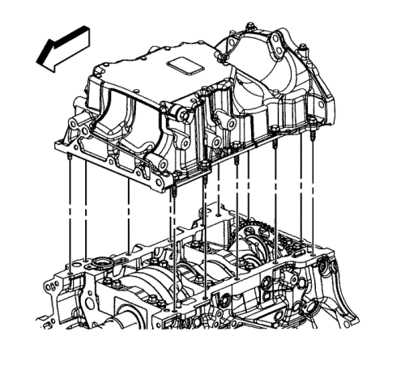
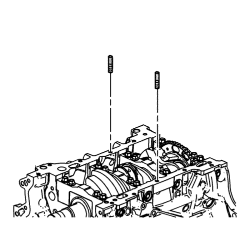
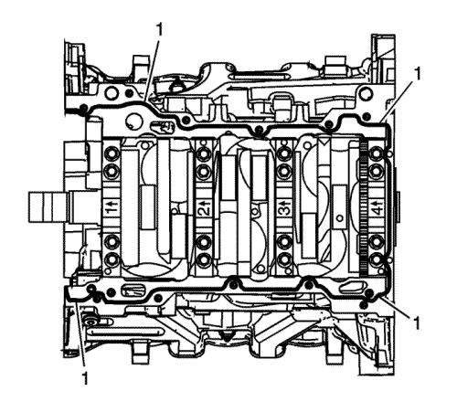
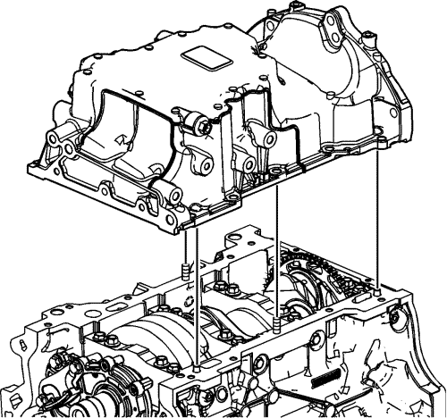
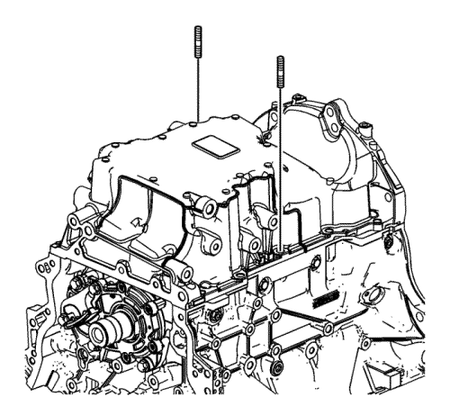
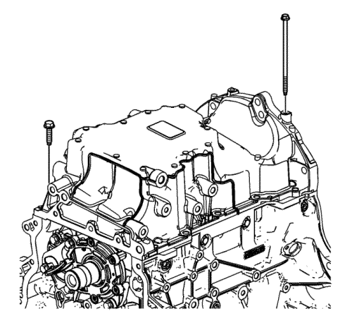
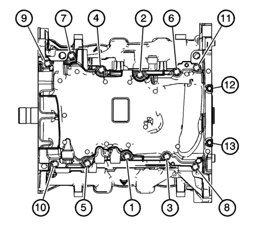

Sustitución del cárter de aceite
Herramientas especiales
EN 46109 Juego de pasadores guía
Procedimiento de desmontaje

- Desconecte el cable negativo de la batería. Consultar Desconexión y conexión del cable de batería negativo .
- Instale el dispositivo de soporte del motor. Consultar Dispositivo de soporte del motor .
- Retire la cubierta delantera. Consultar Sustitución de la cubierta delantera del motor
- Elevar el vehículo y soportarlo de manera segura. Consultar Elevación del vehículo con un gato .
- Drene el aceite del motor y retire el filtro de aceite. Consultar Sustitución del aceite de motor y filtro de aceite. .
- Desmonte el catalizador.
- Retire el compresor de aire acondicionado (A/C). Consultar Sustitución de compresor de aire acondicionado : Diesel → V6 → 2,4l .
- Retire los pernos del cárter de aceite.
- Desmonte el cárter de aceite.
- Limpie el cárter de aceite y la superficie de la junta del bloque motor. Consultar Limpieza y revisión del cárter de aceite .
Procedimiento de montaje

- Monte las guías de 8 mm (0,315 pulg.) del EN 46109 en el orificio del tornillo central del carril del cárter de aceite a cada lado del bloque motor.

- Aplique una base (1) de 3 mm (0,118 pulg.) de sellante de endurecimiento a temperatura ambiente, en el carril del cárter y el alojamiento de sello de aceite trasero del cigüeñal. Consulte Adhesivos, líquidos, lubricantes y selladores para el sellador recomendado.

- Coloque el cárter del aceite en el bloque.

- Desmonte las guías de 8 mm (0,315 pulg.) del EN 46109 del bloque motor.

- Monte los tornillos del cárter de aceite sin apretarlos.
Precaución: Consulte Precaución con las fijaciones en la sección Prólogo

- Apriete los pernos del cárter del aceite en el siguiente orden.
| • | Apriete los pernos de 8 mm (1-11) a 23 N·m (17 lib. pie). |
| • | Apriete los pernos de 6 mm (12-13) a 10 N·m (89 lib. pulg.). |
- Monte el compresor de aire acondicionado (A/C). Consultar Sustitución de compresor de aire acondicionado : Diesel → V6 → 2,4l .
- Monte el catalizador.
- Bajar el vehículo. Consultar Elevación del vehículo con un gato .
- Rellene el aceite de motor. Consultar Sustitución del aceite de motor y filtro de aceite. .
- Monte la tapa delantera. Consultar Sustitución de la cubierta delantera del motor
- Retire el dispositivo de soporte del motor. Consultar Dispositivo de soporte del motor .
- Conecte el cable negativo de la batería. Consultar Desconexión y conexión del cable de batería negativo .
| © Copyright Chevrolet Europe. All rights reserved |